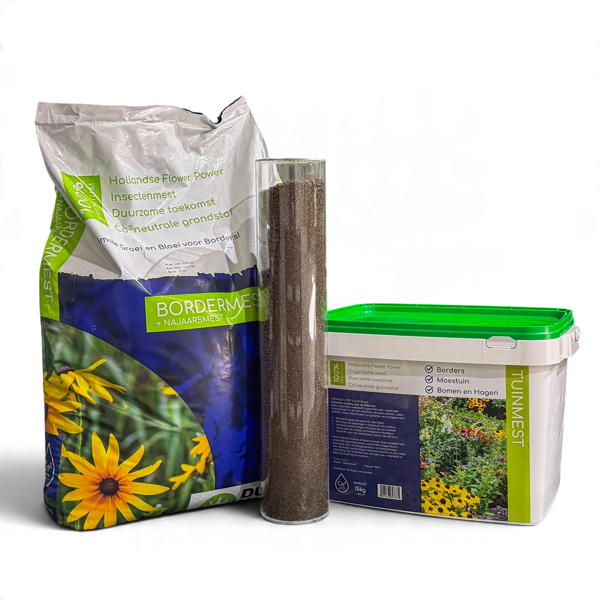

Wat vertellen de drie letters?
Stikstof ondersteunt groene groei, fosfor speelt een rol bij de groei van wortels en scheuten, en kalium onder meer bij bloei, vruchtvorming en weerbaarheid tegen kou. De behoefte hangt ook af van de plant, bodem en groeifase. Meer van één voedingsstof toevoegen is niet automatisch nuttig.
Bij NPK 9-3-6 staat stikstof relatief hoger vermeld dan bij NPK 6-3-12. Dat maakt de twee producten niet zonder meer uitwisselbaar. Lees de precieze declaratie samen met het doel en de toepassing op het etiket.
Vier Dungking-samenstellingen naast elkaar
| Product | NPK volgens productblad | Kijk daarnaast naar |
|---|---|---|
| Startersmest | 12-3-6 + 4MgO | Vroege toepassing in gazon en border |
| Gazonmest | 9-3-6 + 4MgO | Onderhoud van het gazon |
| Border- en Najaarsmest | 6-3-12 + 3MgO | Planttoepassing en seizoen |
| Aanplantmest | 4-3-3 | Nieuwe aanleg en productspecifieke hoeveelheid |
De MgO-vermelding heeft betrekking op magnesium, uitgedrukt als magnesiumoxide. Vergelijk de volledige productinformatie via het overzicht van de meststoffen, in plaats van alleen het hoogste stikstofgetal te kiezen.
NPK is niet hetzelfde als gram per m²
Een product met een andere samenstelling kan ook een andere richtlijn of functie hebben. Verdubbel of halveer daarom niet zelfstandig de gift om twee etiketten gelijk te trekken. Met de berekening voor gazonmest gebruik je de hoeveelheid die bij de gekozen toepassing hoort.
Hoe lees je bemesting in een grondmengsel?
Bij Vitalmix wordt bemesting 4-7-7 genoemd als ingrediënt, naast andere grondstoffen en aanplantmest. Dat is geen opgegeven NPK-waarde van de volledige zak grond. De hoeveelheid grond in liters kun je evenmin behandelen als een mestgift in kilogrammen.
Ook de herkomst van een meststof is een afzonderlijke vraag. Lees hoe Dungking insectenmest gebruikt als je wilt begrijpen wat die basis betekent. NPK alleen zegt niets over een biologisch keurmerk of een absolute milieuclaim.
Veelgestelde vragen
Veelgestelde vragen
Is een hoger NPK-getal altijd beter?
Nee. Kies een samenstelling en gebruiksvoorschrift die bij de toepassing passen. Het etiket is geen ranglijst van kwaliteit.
Is Vitalmix zelf een NPK 4-7-7-meststof?
Die conclusie kun je niet trekken. De aangeleverde Vitalmix-informatie noemt bemesting 4-7-7 als toevoeging in het grondmengsel, niet als NPK-declaratie van het hele product.